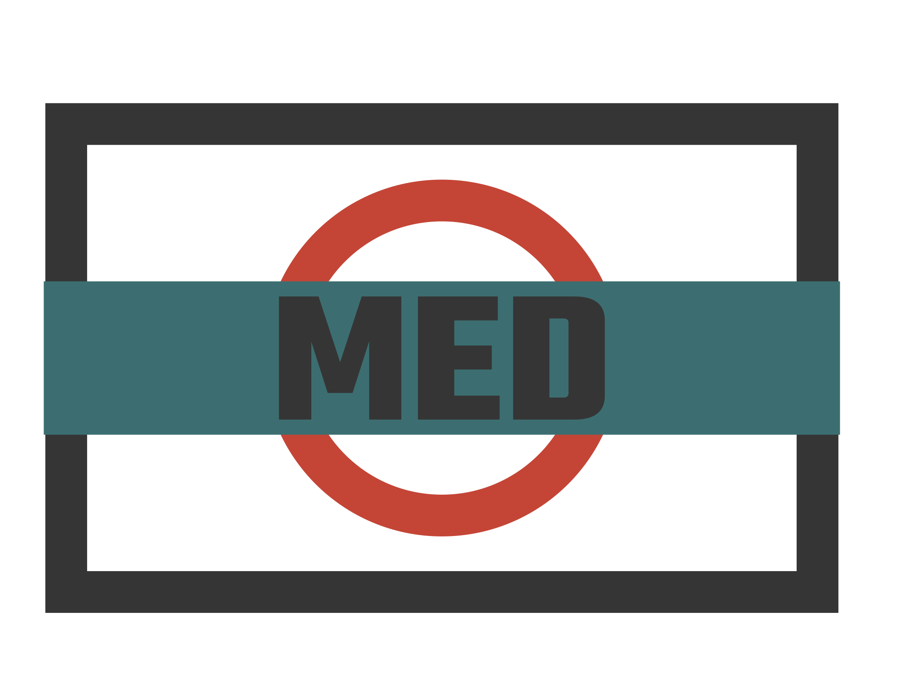

Mediamatik
101-Webauftritt gestalten und realisieren
289-CMS einsetzen und bewirtschaften
269-Fotografieprojekt realisieren
272-Printprodukte entwerfen und umsetzen
276-Medien für Marketingaktion erstellen
Informatik
304-PC installieren und konfigurieren
302-Office Werkzeuge fortgeschritten
305-Multiusersysteme installieren
Über Uns